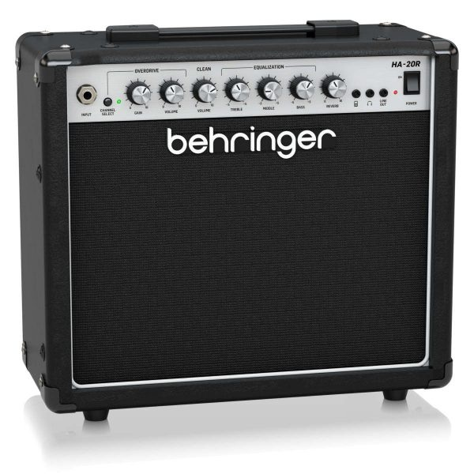

Amplificadores
Amplificador de guitarra Behringer HA-20R 20W

$145.990
Descripción
Amplificador de guitarra de 20 W diseñado para práctica y ensayo. Incorpora controles que permiten ajustar el sonido del instrumento y un efecto de reverberación para añadir profundidad al audio.
Características
- Potencia: 20 W.
- Tipo: amplificador para guitarra eléctrica.
- Altavoz: 8 pulgadas.
- Canales: limpio y overdrive.
- Ecualización: controles de graves, medios y agudos.
- Efecto integrado: reverberación.
Compatibilidad
Compatible con guitarras eléctricas que utilicen una conexión estándar de 1/4". También permite conectar audífonos para practicar de forma privada y una fuente de audio externa para acompañar la práctica con música.